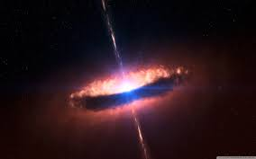
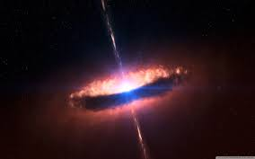

Teleskopy Rentgenowskie
Najważniejszymi źródłami promieniowania X są:
- rentgenowskie układy podwójne (szczególnie mikrokwazary) - obiekty emitujące głównie promieniowanie rentgenowskie; mianem takich układów podwójnych określamy układ między gwiazdą neutronową (lub czarną dziurą) i gwiazdą ciągu głównego, której materia opada na gwiazdę zwartą, co powoduje emisję promieniowania
- centra galaktyk, pulsary, wysokoenergetyczne zjawiska w galaktykach i kwazarach
- Słońce - ludzkość zainteresowana również promieniowaniem rentgenowskim, które emituje Słońce; taki rodzaj fali elektromagnetycznej jest jednym z tych, które emituje nasza gwiazda podczas rozbłysków słonecznych, które są nagłym wyrzutem energii, który jest spowodowany anihilacją pola magnetycznego. Takie rozbłyski mają wpływ na funkcjonowanie ziemskich urządzeń elektrycznych.
 
Pulsar i Rentgenowski układ podwójny
Zewnętrzna warstwa atmosfery ziemskiej - termosfera, odpowiada za absorpcję promieniowania rentgenowskiego, co powoduje wzrost temperatury tej warstwy atmosfery wraz ze wzrostem wysokości. Promieniowanie X jest pochłaniane przede wszystkim przez atomy węgla i azotu, wymagana jest więc obserwacja z Kosmosu. Kolejnym problemem w obserwacjach jest określenie pozycji źródła promieniowania. W celu ograniczenia pola widzenia stosuje się kolimatory lub specjalnie skonstruowane lustra. W celu uniknięcia wpływu atmosfery, przyrządami do rejestrowania promieniowania rentgenowskiego były balony, a później satelity, które opuszczały ziemską atmosferę.
Pierwsze kosmiczne źródło promieniowania rentgenowskiego Scorpius X-1 zostało odkryte w roku 1962 przez Riccardo Giacconiego, późniejszego laureata nagrody Nobla w dziedzinie fizyki. Jednak do tego odkrycia nie dokonano dzięki satelicie, a dzięki lotowi suborbitalnemu rakiety Aerobee.

Aerobee i odkrycie uzyskane z jej użyciem - Scorpius X-1
Do dzisiaj wyniesionych zostało wiele teleskopów działających w tych długościach fali, pozwalają one obserwować: czarne dziury, gwiazdy neutronowe i białe karły. Jak można zauważyć wspólną cechą tych obiektów jest ogromna energia, wytworzona przez pole grawitacyjne. Energia ta rozgrzewa gaz opadający na ciało niebieskie do bardzo wysokich temperatur i to właśnie on, jest źródłem odbieranego przez nas promieniowania. Ponadto promieniowanie X mogą emitować gromady galaktyk czy pozostałości po supernowych.
Do zbierania danych w zakresie promieniowania rentgenowskiego, w 1999 roku prom Columbia wyniósł na orbitę teleskop Chandra. Ponadto w przestrzeni kosmicznej znajdują się: włoskie AGILE, amerykański Swift i zbudowany z udziałem Polaków europejski INTEGRAL (wszystkie trzy teleskopy zbierają również dane w zakresie promieniowania gamma) oraz indyjski Astrosat i amerykańskie Hete 2 oraz NuSTAR.